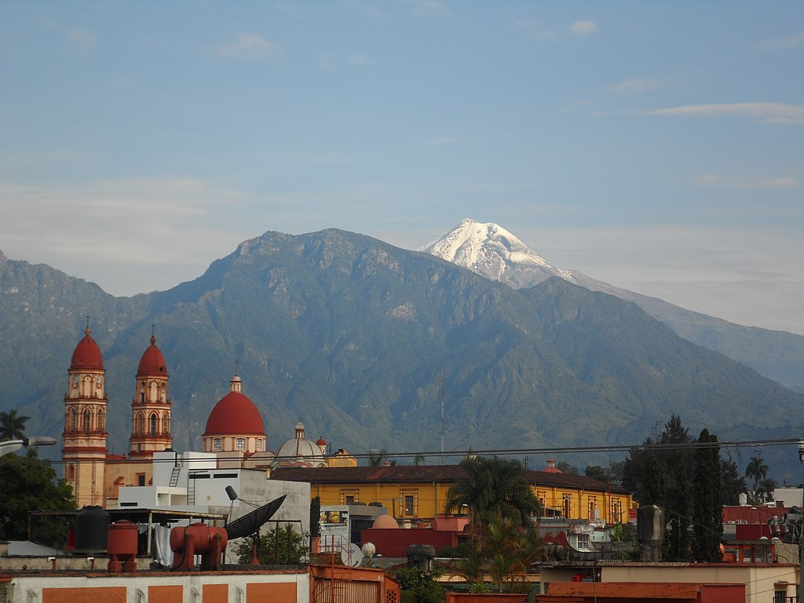

Capital : Mexico.
Population (2018) : ~130 millions of inhabitants.
Form of the State: Presidential
System with unitary: state
President of the Republic: Andrés Manuel Lopez Obrador
Vice-President of the Republic:Ana Lilia Rivera
Parliament: Congress
Official languages: Spanish
Cash : Peso mexicain.
Mexico, officially and in long form the United Mexican States, is a country located in the southern part of North America. It is bounded to the east-southeast by Guatemala and Belize, and to the north-northwest by the United States of America, bordered to the east by the Gulf of Mexico, the Caribbean Sea to the east-southeast, and the Pacific Ocean to the southwest.
The culture of Mexico reflects the complex history of the country and is the result of the gradual mixing of indigenous culture with Spanish culture and other cultures of the country. Its cultural richness is also nourished by the 68 indigenous peoples, successors of pre-Hispanic societies, who speak variants or dialects of a total of sixty-eight languages or languages, including Nahuatl, which has the largest number of speakers.
